유통관리사-2급 (2018-07-01 기출문제)
1과목: 유통물류일반
1. 유통 경로상의 갈등에 대한 내용으로 옳지 않은 것은?
- 상호의존적 관계가 높을수록 구성원들 간의 갈등이 발생할 가능성이 높아진다.
- 유통업체의 규모에 따른 힘이 감소하면서 유통경로 내 갈등은 거의 사라진 상태다.
- 영역(역할)불일치로 인한 갈등은 상권범위 혹은 각 경로구성원이 수행할 역할에 대한 구성원 간의 견해 차이에 의해 발생할 수 있다.
- 경로구성원들이 상대방의 목표를 존중하지 않고 간섭할 때는 목표불일치로 인한 갈등이 나타날 수 있다.
- 프랜차이즈에서 가맹점이 본부에 상권보장을 요구할 때 나타나는 갈등은 영역불일치로 인한 경로갈등이다.
(정답률: 82%)

2. 공급자주도형재고관리(VMI)에 대한 내용으로 옳지 않은 것은?
- 제조업체나 도매업체가 재고관리를 하던 방식이 소매업에 의한 실시 간 발주에 따른 조달방식으로 발전된 것이다.
- VMI구축으로 소매업체의 발주처리비용이 감소하게 된다.
- VMI의 효과로 상품리드타임 단축, 재고감소, 품절감소를 들 수 있다.
- VMI를 구축하더라도 판매정보에 대한 적절한 분석이 이뤄지지 않으면 이상적인 재고량 유지가 어렵다.
- 소매업체의 실시 간 판매정보를 기반으로 공급자측은 정확한 판매예측과 재고조절, 상품기획이 가능하다.
(정답률: 60%)
3. 유통과 관련된 정보기술(IT)의 영향에 대한 설명으로 옳지 않은 것은?
- 유통과 IT가 결합하면서 유통의 경쟁력이 증대되고 있다.
- IT발전 덕분에 소매업체에서 취급하는 최소유지상품단위(SKU)의 수가 크게 감소하여 효율적인 운영이 실현되고 있다.
- 소매업의 과학적 상품관리의 필요성이 점차 증대되고 있다.
- 소매업체와 공급업체는 상품주문, 수배송관리, 재고관리, 판매현황 등의 정보를 공유할 수 있게 되었다.
- 정보화를 통한 공급사슬 전체의 정보통합이 중요하다.
(정답률: 72%)
4. 최근 국내 유통의 변화와 그에 따른 시사점으로 옳지 않은 것은?
- 유통업의 국제화와 정보화가 진전되었고 무점포 판매가 증가하고 있다.
- 제조업체, 도매업체, 소매업체, 소비자의 관계와 역할이 변화됨에 따라 전통적 유통채널이 약화되고 있다.
- 유통업체의 대형화로 인해 유통업체 영향력이 증가하였다.
- 소비자들의 다양한 구매패턴에 따라 '어느 점포, 어떤 매장을 이용할 것인가'의 선택이 중요하게 부각되고 있다.
- 제조업자, 도매업자, 소매업자 각각의 역할이 점점 뚜렷하게 구분되고 있다.
(정답률: 84%)
5. 동일업종의 소매점들이 중소기업협동조합을 설립하여 공동구매, 공동판매, 공동시설활용 등 공동사업을 수행하는 체인사업은 무엇인가?
- 조합형 체인사업
- 임의가맹점형 체인사업
- 프랜차이즈형 체인사업
- 직영점형 체인사업
- 자발적 체인(Voluntary chain)사업
(정답률: 72%)
6. 도매상에 관련된 내용으로 옳지 않은 것은?
- 현금거래도매상은 소매상에게 현금거래조건으로 물품을 판매한다.
- 트럭도매상은 주로 한정된 제품을 취급하고, 소매상고객들에게 직접 제품을 운송한다.
- 직송도매상은 소매상의 주문을 받으면 해당 상품을 생산자가 직접 그 소매상에게 배송하도록 한다.
- 소매상들이 진열도매상을 이용하는 주된 이유는 매출비중이 낮은 품목들에 대해 소매상들이 직접 진열과 주문을 하는 것이 매우 중요하기 때문이다.
- 제조업자 도매상은 독립적인 개인이 운영하는 도매상이 아니라 제조업자가 직접 운영하는 도매상이다.
(정답률: 64%)
7. 아래 글상자는 유통의 어떤 효용에 관한 내용인가?
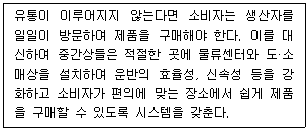
- 존재효용
- 형태효용
- 소유효용
- 시간효용
- 장소효용
(정답률: 82%)
8. 제조업의 수직계열화에 관련된 내용으로 옳지 않은 것은?
- 경로전체를 통합하고자 하는 제조업중심의 수직계열화는 유통기능의 중복을 최소화하는 효과를 가져올 수 있다.
- 유통업자가 자기의 정책을 실현하기 위해 대리점제, 리베이트, 재판매가격유지전략 등을 통해 제조업자를 조직화하는 행위이다.
- 제조업체가 유통과정의 지배를 꾀하는 것을 의미한다.
- 생산자가 자사제품을 소비자에게 직접 판매하고자 할 때도 활용된다.
- 통신판매, 방문판매, 소매점 직영은 제조업의 수직계열화에 포함된다.
(정답률: 58%)
9. SERVQUAL이라는 서비스품질모형의 다섯 가지 구성 차원으로 옳지 않은 것은?
- 유형성
- 신뢰성
- 응답성
- 확신성
- 공통성
(정답률: 66%)
10. 경로파워의 원천의 하나로서, 재판매업자가 공급업자에 대해 일체감을 갖거나 일체감을 갖게 되기를 바라는 정도를 나타내는 것은?
- 강제력(coercive power)
- 보상력(reward power)
- 합법력(legitimate power)
- 준거력(referent power)
- 전문력(expert power)
(정답률: 85%)
11. 아래 글상자에서 설명하는 현대적 리더십은?
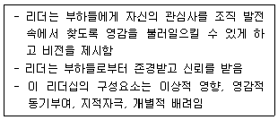
- 카리스마 리더십
- 상호거래적 리더십
- 변혁적 리더십
- 민주적 리더십
- 코칭 리더십
(정답률: 55%)
12. 서로 경쟁하던 슈퍼마켓과 할인점의 복합 형태인 수퍼센터의 등장을 설명해 줄 수 있는 소매업태 혁신과정이론으로서 가장 옳은 것은?
- 진공지대이론
- 변증법적이론
- 소매차륜이론
- 아코디언이론
- 소매수명주기이론
(정답률: 69%)
13. 물류 환경의 최근 변화에 대한 설명으로 가장 옳지 않은 것은?
- 적정물류 서비스에 대한 고객의 욕구가 점점 증가하고 있다.
- 빠른 배송, 짧은 리드타임 요구 등 시간 단축의 중요성이 커지고 있다.
- 조직들의 통합화보다 개별화의 움직임이 더 커졌다.
- 아웃소싱을 통한 물류비 절감효과가 커졌다.
- 물류기업 및 물류시장의 경쟁범위가 글로벌화 되었다.
(정답률: 85%)
14. 공급사슬관리 상의 채찍효과가 일어나는 원인으로 가장 옳지 않은 것은?
- 가격할인을 통해 일시적으로 수요량이 증가한 것을 인지하지 못하고 주문을 할 때
- 인기가 높은 제품을 판매하기 위해 소매상이 실제 수요보다 과대 주문을 할 때
- 주문을 할 때 긴 리드타임의 안전재고까지 포함해서 주문할 때
- 공급사슬을 통합해서 수요 예측을 한 구성원이 담당할 때
- 공급사슬의 구성원이 증가하여 단계가 늘어날 때
(정답률: 66%)
15. 아래 글상자 ( )안에 알맞은 도매상의 유형은?
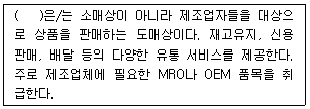
- 산업재 유통업체
- 전문품 도매상
- 도매상인
- 브로커
- 제조업체 도매상
(정답률: 46%)
16. 경쟁강도를 반영하여 상품가격을 결정하는 방법으로 보기가 가장 어려운 것은?
- 단수가격 결정법
- 경쟁대응가격 결정법
- 상시저가 결정법
- High/Low 결정법
- 벤치마킹 결정법
(정답률: 46%)
17. 경제적 주문량(EOQ)을 적용하기 위한 전제로 옳지 않은 것은?
- 재고유지비용은 시간의 변화에 관계없이 일정하다.
- 발주 상품의 주문은 다른 상품과 관계가 없다.
- 발주 비용은 최근의 것일수록 높은 가중치를 가진다.
- 연간 수요량은 알려져 있다.
- 발주시점과 입고시점 사이의 간격인 리드타임이 알려져 있다.
(정답률: 52%)
18. 최근 유통업계에서는 모바일 쿠폰을 매장에서 사용하거나 앱(app)을 통해 음식을 배달하는 등의 변화가 일어나고 있다. 이와 같이 온라인과 오프라인을 유기적으로 결합해서 새로운 가치를 창출해내는 서비스를 나타내는 용어로 옳은 것은?
- Brick-and-Mortar
- B2B
- O2O
- C2B
- IoT
(정답률: 78%)
19. 아래 글상자 ( )안에 들어갈 조직의 유형을 순서대로 옳게 나타낸 것은?
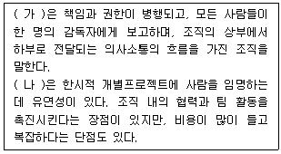
- 가 : 라인-스태프 조직, 나 : 교차기능 자율경영팀
- 가 : 라인 조직, 나 : 교차기능 자율경영팀
- 가 : 라인 조직, 나 : 매트릭스 조직
- 가 : 라인-스태프 조직, 나 : 매트릭스 조직
- 가 : 교차기능 자율경영팀, 나 : 라인-스태프 조직
(정답률: 58%)
20. 기업이 고려해야 할 사회적 책임은 그 대상에 따라 기업의 유지, 발전에 대한 책임과 이해관계자에 대한 책임으로 나눌 수 있다. 이해관계자에 대한 책임에 해당되지 않는 것은?
- 주주에 대한 책임
- 종업원에 대한 책임
- 경쟁사에 대한 책임
- 소비자에 대한 책임
- 정부에 대한 책임
(정답률: 57%)
21. 공급사슬관리(SCM)가 전통적인 자재관리나 생산관리와 다른 이유로 옳지 않은 것은?
- 공급사슬관리는 전략적 의사결정을 요구하기 때문이다.
- 공급사슬관리는 정보시스템에 대한 새로운 접근 방법을 요구하며, 통합이 아닌 인터페이스가 그 초점이 되기 때문이다.
- 공급사슬관리는 균형을 잡기 위한 메카니즘의 마지막 보루로 이용되는 재고에 대한 새로운 접근 방법을 요구하기 때문이다.
- 공급사슬관리를 하나의 실체로서 간주하고, 공급사슬 상의 여러 세그먼트에 대한 단편적인 책임을 구매, 생산, 판매, 배송 등과 같은 기능부문에 귀속시키지 않기 때문이다.
- 공급사슬관리에서 공급이란 실질적으로 공급사슬 상의 모든 기능의 공유된 목표이며, 전체 원가와 시장점유율에 미치는 영향 때문에 전략적 중요성을 가지기 때문이다.
(정답률: 55%)
22. 신속반응(quick response)시스템의 효과에 대한 설명으로 가장 옳지 않은 것은?
- 소매업자 측면에서는 수익증대와 고객서비스 개선효과를 누릴 수 있다.
- 제조업자 측면에서는 생산 및 수요예측이 용이하고 상품 품절을 방지할 수 있다.
- 원자재로부터 최종 제품에 이르는 리드타임의 단축과 재고감소가 일어난다.
- 안전재고가 늘어나 고객서비스가 높아진다.
- 소매업자와 제조업자가 시장변화를 감지할 수 있다.
(정답률: 74%)
23. 경로커버리지 유형 중 전속적 유통(exclusive channel)에 대한 설명으로 가장 옳지 않은 것은?
- 극히 소수의 소매점포에게만 자사 제품을 취급하도록 하는 것이다.
- 브랜드 충성도가 매우 높은 제품을 생산하는 제조업체가 채택하는 경향이 높은 전략이다.
- 제조업체는 소매점포에 대한 통제력을 강화함으로써 자사브랜드이미지를 자사 전략에 맞게 유지할 수 있다.
- 중소슈퍼, 식당, 주점 등을 대상으로 하는 주류 제조업체나 약국을 대상으로 하는 제약업체의 영업이 대부분 여기에 해당한다.
- 소비자들은 브랜드 충성도가 높은 브랜드를 구매하기 위해 기꺼이 많은 노력을 기울이기 때문에 적은 점포수로도 원활한 유통이 가능하다.
(정답률: 74%)
24. 보관 효율화를 위한 기본원칙으로 옳지 않은 것은?
- 유사성의 원칙 : 유사품을 인접하여 보관하는 원칙이다.
- 중량특성의 원칙 : 물품의 중량에 따라 장소의 높고 낮음을 결정하는 원칙이다.
- 명료성의 원칙 : 시각적으로 보관물품을 용이하게 식별할 수 있도록 보관하는 원칙이다.
- 통로대면보관의 원칙 : 보관할 물품을 입출고 빈도에 따라 장소를 달리하여 보관하는 원칙이다.
- 위치표시의 원칙 : 보관물품의 장소와 랙 번호 등을 표시함으로써 보관업무 효율화를 기하는 원칙이다.
(정답률: 68%)
25. 소비자기본법[시행 2017.10.31] [법률 제15015호, 2017.10.31.,일부개정]에서는 조정위원회가 분쟁조정을 신청 받은 때에는 신청을 받은 날부터 며칠 이내에 분쟁조정을 마치도록 정하고 있는가?
- 10일
- 14일
- 15일
- 21일
- 30일
(정답률: 44%)
2과목: 상권분석
26. 좋은 여건의 입지라고 보기가 가장 어려운 것은?
- 지형상 고지대보다는 낮은 저지대 중심지
- 동일 동선에서 출근길 방향보다는 퇴근길 방향에 있는 곳
- 상대적으로 권리금이 낮거나 없는 곳
- 대형평형 보다 중소형평형 아파트단지 상가
- 대형사무실 보다 5층 이하 사무실이 많은 곳
(정답률: 59%)
27. 사람들은 눈 앞에 보여도 간선도로를 건너거나 개울을 횡단해야 하는 점포에는 접근하지 않으려는 경향이 있다. 이런 현상에 대한 설명으로 가장 옳은 원칙은?
- 사람이 운집한 곳을 선호하는 인간집합의 원칙
- 득실을 따져 득이 되는 쪽을 선택하는 보증실현의 원칙
- 위험하거나 잘 모르는 길을 지나지 않으려는 안전추구의 원칙
- 목적지까지 최단거리로 가려고 하는 최단거리 추구의 원칙
- 자신의 자아이미지에 가장 합당한 공간을 추구하는 자아일치의 원칙
(정답률: 64%)
28. 점포의 입지와 관련된 아래 주장 중 가장 옳지 않은 것은?
- 점포의 주된 매출원천은 입지의 상권에 포함되는 고객들이다.
- 다른 조건이 모두 같다면, 구매빈도가 높은 업종일수록 더 큰 상권이 필요하다.
- 상권 범위는 도로 및 교통기관의 발달 상태에 따라 달라진다.
- 업종구성이 상권 범위에 미치는 영향은 무시할 수 없다.
- 상권의 크기와 함께 인구밀도도 점포의 매출에 영향을 미친다.
(정답률: 69%)
29. 상권의 계층성을 최초로 주장한 '중심지이론' 과 관련이 깊은 사람은?
- 컨버스(Converse, P. D.)
- 크리스탈러(Christaller, W.)
- 라일리(Reilly, W. J.)
- 허프(Huff, D.)
- 애플바움(Applebaum, W.)
(정답률: 70%)
30. 서비스업종의 매출액을 추정하기 위한 아래의 공식에서 ( )에 들어갈 적합한 용어는?
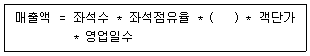
- 실구매율
- 내점률
- 회전율
- 내점객수
- 매출실현율
(정답률: 45%)
31. 회원제도매클럽은 대규모 매장에서 낮은 마진으로 상품을 판매한다. 회원제 도매클럽의 입지로 가장 적합한 곳은?
- 중심상업지역
- 커뮤니티센터
- 네이버후드센터
- 패션/전문센터
- 파워센터
(정답률: 48%)
32. 아울렛 몰(outlet mall)에 대한 설명으로 가장 옳은 것은?
- 주로 오래된 공장건물이나 창고에 입지한다.
- 하자상품이나 이월상품을 판매하는 점포들만 입점한다.
- 스스로 고객을 흡인할 수 있는 규모와 점포구성을 가진다.
- 비교구매를 돕기 위해 다른 지역쇼핑센터 인근지역에 입지한다.
- 입지 특성 때문에 상권의 범위는 소재지 도시를 벗어나지 않는다.
(정답률: 58%)
33. 해당 입지의 상권 발전에 긍정적인 영향을 미칠 가능성이 가장 높은 것은?
- 도보로 접근하기에 약간 먼 거리에 대형 할인점이 개점한다.
- 도보로 접근하기에 약간 먼 거리에 중심상업지역이 개발된다.
- 해당 지역의 용도가 전용공업지역으로 바뀐다.
- 인근에 지하철역이 새로 들어선다.
- 사람들이 걸어 다니던 주변 도로에 새로 마을버스가 통과한다.
(정답률: 80%)
34. 도매상의 입지전략에 대한 설명으로 가장 옳지 않은 것은?
- 영업성과에 대한 입지의 영향은 소매상보다 도매상의 경우가 더 작다.
- 분산도매상은 물류의 편리성을 고려하여 입지를 결정한다.
- 수집도매상의 영업성과에 대한 입지의 영향은 매우 제한적이다.
- 도매상은 보통 소매상보다 임대료가 저렴한 지역에 입지한다.
- 도매상은 보통 최종소비자의 접근성을 고려하여 입지를 결정한다.
(정답률: 70%)
35. 매장면적비율법은 상권 내 동일업종의 총 매장면적에서 점포의 매장면적이 차지하는 비율을 이용하여 해당 점포의 매출액을 추정한다. 매장면적비율법의 내용으로 가장 옳지 않은 것은?
- 상권의 총잠재수요는 해당 업종에 대한 1인당 총지출액과 상권인구를 곱해서 구한다.
- 상권의 총예상매출액은 총잠재수요와 상권인구의 상권 밖에서의 구매비율을 곱해서 구한다.
- 해당 점포의 매출은 상권의 총예상매출액과 매장면적비율을 곱해서 구한다.
- 경쟁점포에 대한 경쟁력이 약하면 매장면적비율보다 더 작게 매출액비율을 추정한다.
- 유동인구의 효과를 가중하여 매장면적비율에 따른 추정매출액을 조정할 수 있다.
(정답률: 43%)
36. 특정 상권의 수요를 추정하려면 경쟁자분석도 실시해야 하는데 가장 용이하게 경쟁자분석을 실시할 수 있는 점포는?
- 상품구색이 독특한 선물가게
- 희귀한 수입 애완동물을 판매하는 소매점
- 디자이너 브랜드 패션을 판매하는 부티크
- 지역 거점도시의 도심에 개업한 프랑스요리 전문식당
- 전국에 걸쳐 수많은 점포를 개설한 프랜차이즈 편의점
(정답률: 73%)
37. 동일업종의 선매품 소매점포들이 서로 인접하여 입지하는 경향을 설명하는 것은?
- 소매중력이론
- 중심지이론
- 누적흡인력의 원칙
- 경쟁회피성의 원칙
- 양립성의 원칙
(정답률: 64%)
38. 점포의 경쟁상황을 분석할 때는 경쟁의 다양한 측면을 다루어야 한다. 대도시의 상권을 도심, 부도심, 지역중심, 지구중심 등으로 분류하고 각 수준별 및 수준간 경쟁관계의 영향을 함께 고려하는 것은?
- 업태간·업태내 경쟁구조 분석
- 위계별 경쟁구조 분석
- 절대위치별 경쟁구조 분석
- 잠재 경쟁구조 분석
- 경쟁·보완관계 분석
(정답률: 66%)
39. 어느 지역의 대체적인 수요를 측정하기 위해 활용하는 구매력지수(BPI : buying power index)를 구할 때 필요한 구성요소들 중 일반적으로 사용되는 표준공식에서 가장 높은 가중치를 부여받는 변수는?
- 인구관련 변수
- 소득관련 변수
- 소매매출액관련 변수
- 소매점면적관련 변수
- 경쟁자관련 변수
(정답률: 48%)
40. 상권분석을 통해 고객의 분포상황을 보면 일반적으로 점포에 가까울수록 고객의 밀도가 높고, 점포로부터 멀어질수록 고객의 밀도가 낮아지는 경향을 설명하는 단어는?
- 거리감소효과
- 거리증대효과
- 밀도집중효과
- 밀도분산효과
- 고객점표효과
(정답률: 35%)
41. 상권분석에서 기술적 조사방법인 유추법(analog method)의 진행과정을 설명한 것이다. 일반적인 진행순서로 보아 세 번째 단계에 해당되는 것은?
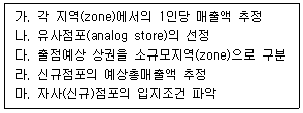
- 가
- 나
- 다
- 라
- 마
(정답률: 38%)
42. 점포의 입지결정이나 소매마케팅 전략의 수립에 필요한 상권분석 과정에서 다양하게 활용되고 있는 CST(customer spotting technique) map과 상대적으로 관련성이 낮은 것은?
- 점포의 물리적 조건 파악
- 고객점표법
- 고객특성 조사
- 유추법
- 상권잠식 파악
(정답률: 30%)
43. 상권분석이 실행되는 경우는 신규점포개설 상황과 기존점포관리 상황으로 나누어 볼 수 있다. 기존점포의 상권분석 상황에 해당되지 않는 것은?
- 상권 내의 소비자특성과 경쟁상황에 맞는 소매믹스 전략을 도출하는 상황
- 경쟁력이 떨어지는 점포를 포기하고 점포의 이전여부를 분석하는 상황
- 점포의 경영성과가 좋아 점포면적을 확장하여 매출 확대를 도모하는 상황
- 점포주변 인구구성이 변화하여 상권범위의 확대와 축소를 확인하려는 상황
- 상권 내에서 생존가능성이 낮다고 인식하여 폐점여부를 분석하는 상황
(정답률: 49%)
44. 지역시장의 성장가능성이 높지만 기존 점포 간의 경쟁이 치열하여 매출 쟁탈을 위한 적극적인 판매노력이 요구되는 상황은?
- 소매포화지수(IRS)와 시장성장잠재력지수(MEP)가 모두 높은 경우
- 소매포화지수(IRS)는 높지만 시장성장잠재력지수(MEP)가 낮은 경우
- 소매포화지수(IRS)는 낮지만 시장성장잠재력지수(MEP)가 높은 경우
- 소매포화지수(IRS)와 시장성장잠재력지수(MEP)가 모두 낮은 경우
- 소매포화지수(IRS)와 시장성장잠재력지수(MEP) 만으로는 알 수 없음
(정답률: 53%)
45. 자가용차를 소유한 소비자의 증가추세가 상권에 미치는 영향을 설명한 내용으로 옳지 않은 것은?
- 소비자의 이동성을 높여 저밀도의 넓은 영역으로 주택 분산이 가능해지고 인구의 교외화가 진행된다.
- 소비수요가 중심도시로부터 교외로 이동하고 다양한 상업기회가 교외에서 생겨난다.
- 소비자의 지리적 이동거리가 확대되고 이동속도가 빨라지는 동시에 소비자가 감당하는 물류기능은 감소한다.
- 자가용차 이용은 유류비와 차량 유지비용 발생으로 다목적 쇼핑외출과 같은 새로운 쇼핑패턴을 생성하여 유통시스템에 영향을 미친다.
- 자가용차 이용으로 소비자가 여러 도시를 자유롭게 이동할 수 있어 소매상의 시장범위가 비약적으로 확대된다.
(정답률: 70%)
3과목: 유통마케팅
46. 매장배치와 관련하여 옳은 설명만을 묶어놓은 것은?
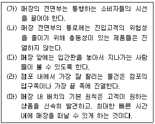
- (가), (나), (다)
- (가), (다), (라)
- (나), (다), (라)
- (나), (다), (마)
- (다), (라), (마)
(정답률: 59%)
47. 인적판매에 대한 설명으로 옳지 않은 것은?
- 소비자와 대화를 나누며 상품 관련 정보를 제공하고 설득하여 판매활동을 종결한다.
- 소비자의 질문이나 요구에 대하여 즉각적인 피드백이 가능하다.
- 소비자마다 다르게 요구하는 사항들을 충족시키기 위해 필요한 방법을 신속하게 제시할 수 있다.
- 다른 촉진활동에 비해 더 효과적으로 소비자반응을 유도해 낼 수 있다.
- 백화점의 판매원과 같은 주문창출자와 보험판매원과 같은 주문수주자의 두 가지 유형으로 구분된다.
(정답률: 59%)
48. 소매점 촉진수단으로서의 광고에 대한 설명으로 옳지 않은 것은?
- 유통광고는 소매점이 상권 내에 있는 목표소비자들에게 직접 수행하는 촉진활동이다.
- 일반적으로 저렴한 상품가격과 구매행동의 즉각성을 강조한다.
- 유통점의 이미지를 제고함으로써 소비자 방문율을 높이기 위한 이미지광고가 촉진광고에 해당한다.
- 특정 기간 동안 실시되는 바겐세일을 알리는 특매 광고가 촉진광고에 해당한다.
- 상권 내의 다른 점포나 제조업자와 비용을 부담해서 수행하는 협동광고형식을 활용하기도 한다.
(정답률: 25%)
49. 매장 내부의 특성과 추구하는 매장 이미지를 모두 옳게 짝지어 놓은 것은?
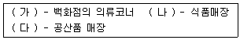
- (가)화려한 매장, (나)깨끗한 매장, (다)편리한 매장
- (가)화려한 매장, (나)편리한 매장, (다)깨끗한 매장
- (가)편리한 매장, (나)화려한 매장, (다)깨끗한 매장
- (가)편리한 매장, (나)깨끗한 매장, (다)화려한 매장
- (가)깨끗한 매장, (나)화려한 매장, (다)편리한 매장
(정답률: 70%)
50. 풀(pull)과 푸시(push) 전략에 대한 설명으로 가장 옳지 않은 것은?
- 풀과 푸시 전략은 제조업체들이 이용하는 가장 기본적인 촉진전략으로 소구대상이 서로 다르다.
- 풀 전략은 제조업체가 최종소비자들을 상대로 촉진활동을 하여 소비자들로 하여금 중간상에게 자사제품을 요구하도록 하는 것으로, TV광고를 예로 들 수 있다.
- 푸시 전략에는 가격할인, 수량할인, 인적판매, 협동광고 등이 있다.
- 산업재의 경우에는 풀 전략, 소비재의 경우에는 푸시전략이 중요하다.
- 많은 제조업체들은 풀 전략과 푸시 전략을 병행해서 사용한다.
(정답률: 51%)
51. 중간상이 제조업자를 위해 지역광고를 하거나 판촉을 실시할 경우 이를 지원하기 위해 지급되는 보조금으로, 중간상이 제조업자에게 물품대금을 지불할 때 그 금액만큼 공제하는 가격할인 유형으로 옳은 것은?
- 수량 할인
- 거래 할인
- 현금 할인
- 상품 지원금
- 판매촉진 지원금
(정답률: 59%)
52. 소매점포는 시각적 커뮤니케이션 요소, 조명, 색상, 음악, 향기 등을 종합적으로 이용하여 내점고객의 지각 및 감정반응을 자극하고 나아가서 구매행동에 영향을 미치려고 노력한다. 이러한 소매점포 관리 활동을 나타내는 용어로 옳은 것은?
- 점포 배치
- 점포 진열
- 점포내 머천다이징
- 점포 분위기관리
- 감각적 머천다이징
(정답률: 42%)
53. 오프프라이스(off price) 의류점에서 격자형(grid) 점포배치를 피해야 할 이유로서 가장 옳은 것은?
- 격자형 배치는 비용 효율성이 낮다.
- 격자형 배치는 공간이용의 효율성이 낮다.
- 격자형 배치는 고객들을 자연스럽게 매장 안으로 유인하지 못한다.
- 격자형 배치는 고객이 계획에 없던 부문매장(department)을 방문하게 만든다.
- 격자형 배치는 상품진열에 필요한 걸이(fixtures)의 소요량을 대폭 증가시킨다.
(정답률: 42%)
54. 기술진보가 마케팅에 미치는 영향으로서 가장 타당한 것은?
- 단편화된 다수의 소규모 세분시장들이 소수의 매스마켓으로 통합된다.
- 판매를 위해 산업재 생산자는 더 많은 중간상을 활용한다.
- 마케터가 제공하는 정보에 대한 소비자의 의존도가 과거에 비해 감소한다.
- 마케터가 매스마케팅 기법을 활용하는 비중이 증가한다.
- 마케터가 소비자에게 정보를 제공하기 위한 비용이 증가한다.
(정답률: 48%)
55. 고가격 전략을 수립할 수 있는 경우로서 옳지 않은 것은?
- 최신의 특정상품을 세심한 고객응대를 통해 판매하는 전문점
- 고객의 요구에 맞춘 1:1 고객서비스에 중점을 두는 소매점
- 품위 있는 점포분위기와 명성을 중요시하는 고객을 타겟으로 하는 소매점
- 고객 맞춤형 점포입지를 확보하고 맞춤형 영업시간을 운영하는 소매점
- 물적유통비용의 절감을 통해 규모의 경제를 실현하고자 하는 소매점
(정답률: 74%)
56. 소셜미디어 마케팅의 장점으로 옳은 것은?
- 소셜미디어는 표적화 되어 있고 인적(personal)인 속성이 강하다.
- 소셜미디어 캠페인의 성과는 측정이 용이하다.
- 마케터의 메시지 통제 정도가 강하다.
- 기업과 제품에 대한 정보를 푸시를 통해 적극적으로 제공한다.
- 소셜미디어 캠페인은 실행이 단순하고 역효과가 없다.
(정답률: 30%)
57. 광고매체를 선정할 때는 도달범위(reach)와 도달빈도(frequency)의 상대적 중요성을 고려해야 한다. 도달빈도보다 도달범위가 더 중요한 상황으로 옳은 것은?
- 강력한 경쟁자가 있는 경우
- 표적 청중을 명확히 정의하기 어려운 경우
- 광고 메시지가 복잡한 경우
- 표적청중이 자사에 대해서 부정적 태도를 갖고 있는 경우
- 구매주기가 짧은 상품을 광고하는 경우
(정답률: 57%)
58. 소매수명주기 중 판매증가율과 이익수준이 모두 높은 단계에 수행해야 하는 소매업자의 전략으로 옳은 것은?
- 성장유지를 위한 높은 투자
- 특정 세분시장에 대한 선별적 투자
- 소매개념을 정립 및 정착시키는 전략
- 소매개념을 수정하여 새로운 시장에 진출하는 전략
- 자본지출을 최소화하는 탈출전략
(정답률: 49%)
59. 유통산업발전법[2018. 1. 18시행] 상의 대규모점포 등에 대한 영업시간 제한에 관한 내용으로 옳지 않은 것은?(문제 오류로 가답안 발표시 5번으로 발표되었지만 확정답안 발표시 3, 5번이 정답처리 되었습니다. 여기서는 가답안인 5번을 누르시면 정답 처리 됩니다.)
- 특별자치시장, 시장, 군수, 구청장은 건전한 유통질서확립과 근로자의 건강권 및 대규모점포 등과 중·소유통업의 상생발전을 위해 필요한 경우 영업시간 제한을 명할 수 있다.
- 여기서 대형마트는 대규모점포에 개설된 점포로서 대형마트의 요건을 갖춘 점포를 포함한다.
- 대형마트와 준대규모점포에 대하여 오전 0시부터 오후 10시까지의 범위에서 영업시간을 제한할 수 있다.
- 영업시간 제한과 의무휴업일 지정에 필요한 사항은 해당 지방자치단체의 조례로 정한다.
- 매월 이틀을 의무휴업일로 지정하여야 하는데 이 경우 의무휴업일은 공휴일 중에서만 지정한다.
(정답률: 67%)
60. 경로구성원 관계에서 작용하는 경로파워의 원천과 그 예들을 옳게 짝지은 것은?
- 보상적 파워 - 경영관리에 대한 조언, 종업원교육
- 강압적 파워 - 마진폭의 인하, 밀어내기, 끼워팔기
- 합법적 파워 - 유명상표 취급에 대한 긍지, 상대방의 신뢰
- 준거적 파워 - 판매지원, 시장정보, 특별할인
- 전문적 파워 - 계약, 상표등록, 특허권, 프랜차이즈 협약
(정답률: 61%)
61. 상품의 판매동향을 탐지하거나 상품개발, 수요예측 등을 위하여 실험적으로 운영되는 점포들로 짝지어진 것은?
- 플래그숍, 안테나숍
- 테넌트숍, 파일럿숍
- 마크넷숍, 플래그숍
- 파일럿숍, 안테나숍
- 센싱숍, 마그넷숍
(정답률: 40%)
62. 업셀링(upselling)과 연관성이 가장 낮은 것은?
- 교차판매
- 격상판매
- 고부가가치 품목 유도
- 거래액 증가
- 객단가 향상
(정답률: 61%)
63. 소매업체들이 해외시장에 진입하는 방식으로서 가장 옳지 않은 것은?
- 아웃소싱
- 직접투자
- 합작투자
- 전략적 제휴
- 프랜차이즈
(정답률: 40%)
64. 소매상의 유통전략에 대한 내용으로 옳지 않은 것은?
- 편의점들은 도시락, 커피판매, 자체 브랜드(PB) 상품과 택배·금융·사무 보조 등 생활편의 서비스를 확대한다.
- 대형마트는 항시염가전략과 PB, 무상표 상품을 포함한 고회전전략을 추구한다.
- 전문할인점은 의약품이나 화장품, 생활용품 등을 취급하는 복합점포로서 건강/미용 상품에 특화하고 있다.
- 회원제도매클럽은 일반적으로 일정 회비를 내는 회원들에게 할인된 정상제품을 판매하는 유통업태이었지만 비회원제로 운영하는 경우도 생겼다.
- 매장 자체를 소비자를 위한 놀이터 개념으로 유통과 엔터테인먼트를 결합시킨 리테일먼트 전략을 추구하는 소매점포도 생겼다.
(정답률: 51%)
65. 어느 백화점의 경영 현황을 파악하기 위해 2차 자료를 수집하였다. 2차 자료에 해당하지 않는 것은?(오류 신고가 접수된 문제입니다. 반드시 정답과 해설을 확인하시기 바랍니다.)
- 제품계열별 판매액
- 지점별 주요 제품 재고
- 직접 조사한 지점별 고객 만족도
- 고객별 지출액
- 연간 성장률
(정답률: 59%)
66. 제조업자의 중간상 촉진과정에서 발생하는 문제점 중 도매상이나 소매상이 판매촉진기간 동안에 판매할 수 있는 수량보다 더 많은 상품을 저렴한 원가로 구매하여 판촉기간 후에 판매함으로써 높은 이익을 얻으려는 것은?
- 전매
- 공제전환
- 선물구매
- 촉진일탈
- 기회주의적 행동
(정답률: 29%)
67. 아래 글상자 내용이 설명하는 판매촉진 기법은?
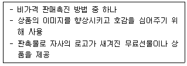
- 견본품
- 컨테스트
- 프리미엄
- 시연회
- 쿠폰
(정답률: 49%)
68. 아래 글상자가 설명하고 있는 용어는?
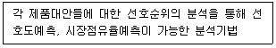
- 컨조인트분석
- 다차원적 척도법
- 군집분석
- 비율분석
- 회귀분석
(정답률: 49%)
69. ( 가 ), ( 나 )안에 들어갈 용어로 가장 옳은 것은?
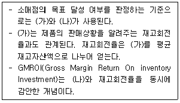
- 가 : 연간 매출액, 나 : 경상이익
- 가 : 매출 총이익, 나 : 경상이익
- 가 : 연간 매출액, 나 : 총이익률
- 가 : 총영업이익, 나 : 연간 매출액
- 가 : 총매출이익률, 나 : 순매출액
(정답률: 47%)
70. 고객관계관리(CRM)에 대한 설명으로 가장 옳지 않은 것은?
- 신규고객의 유치로부터 시작하는 고객관계를 고객 전 생에 걸쳐 유지함으로써 장기적으로 고객의 수익성을 극대화하는 것이 중요한 목적이다.
- 고객충성도를 극대화하기 위해 개별고객의 구체적 정보를 관리하고 고객과의 접촉점을 세심하게 관리하는 과정, 고객 획득, 유지, 육성 모두를 다룬다.
- 신규고객확보, 기존고객유지 및 고객수익성 증대를 위하여, 지속적인 커뮤니케이션을 통해 고객행동을 이해하고 영향을 주기 위한 광범위한 접근으로 정의하고 있다.
- 소비자에 대한 정보를 분석하고 장기적인 관계를 통해 이익을 극대화하기 위한 기법으로 전적으로 기업에게만 유익한 마케팅 방법이라는 비판을 받는다.
- 고객에 대한 매우 구체적인 정보를 바탕으로 개개인에게 적합하고 차별적인 제품 및 서비스를 제공하여 고객관계를 유지하고 일대일 커뮤니케이션을 가능하게 해준다.
(정답률: 69%)
4과목: 유통정보
71. 아래 글상자 ( ) 안에 공통적으로 들어갈 알맞은 용어는?
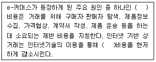
- 거래
- 협업
- 분배
- 독립
- 기회
(정답률: 60%)
72. 빅데이터 솔루션에서 처리하는 다양한 데이터는 정형, 반정형, 비정형 데이터로 구별해 볼 수 있다. 이들에 대한 설명으로 가장 옳은 것은?
- 정형 데이터는 데이터 모델 또는 스키마를 따르며 주로 테이블 형식으로 저장된다.
- 비정형 데이터는 ERP, CRM 시스템과 같은 기업의 정보시스템에서 자주 생성된다.
- 반정형 데이터는 구조가 정의되어 있지 않은, 일관성이 없는 데이터이다.
- 비정형 데이터는 계층적이거나 그래프 기반이다.
- 은행거래 송장 및 고객기록정보 등이 반정형 데이터의 유형이다.
(정답률: 43%)
73. SCOR모델의 성과측정요소에 대한 설명으로 가장 옳지 않은 것은?
- 성과측정 항목 중 대표적인 비용은 공급사슬관리비용, 상품판매비용 등이다.
- 내부적 관점은 고객의 측면, 외부적 관점은 기업측면에서의 성과측정 항목을 지칭한다.
- 외부적 관점의 성과측정 항목으로는 유연성, 반응성, 신뢰성 등이 있다.
- 공급사슬의 반응시간, 생산 유연성 등은 외부적 관점 중 유연성 측정항목의 요소이다.
- 공급재고 일수, 현금순환 사이클 타임, 자산 회전 등은 자산에 대한 성과측정 항목의 요소이다.
(정답률: 44%)
74. 아래 글상자 ( ) 안에 들어갈 알맞은 용어는?
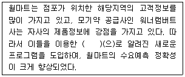
- CPFR
- RossettaNet
- QR
- ECR
- CAO
(정답률: 34%)
75. 전자상거래를 위한 웹사이트 시스템을 개발하는 순서로 가장 옳게 나열된 것은?
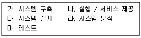
- 가-나-다-라-마
- 다-라-가-나-마
- 라-다-가-마-나
- 다-라-마-가-나
- 나-마-라-다-가
(정답률: 52%)
76. 전자상거래 상에서 발생할 수 있는 보안 위협과 관련된 설명 중 가장 옳지 않은 것은?
- 자기 자신을 복제하여 다른 파일에 확산시키는 컴퓨터 프로그램을 바이러스라 한다.
- 사용자의 동의 없이 설치되는 프로그램인 애드웨어 자체는 불법이 아니지만 그에 따르는 보안상의 문제가 위험요소가 된다.
- 스푸핑은 네트워크에 돌아다니는 정보들을 감시하는 일종의 도청 프로그램이다.
- 파밍은 웹링크가 목적지 주소를 사칭하는 다른 주소의 웹으로 연결해 주는 것이다.
- 핵티비즘은 정치적인 목적을 위한 사이버반달리즘과 정보도용이다.
(정답률: 33%)
77. 공개키 암호화 방식의 과정을 가장 옳게 나열한 것은?
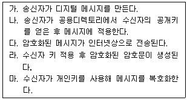
- 가-다-마-라-나
- 마-라-다-가-나
- 다-마-라-나-가
- 가-나-라-다-마
- 가-나-다-라-마
(정답률: 39%)
78. 커뮤니케이션 측면에서 볼 때, 데이터 시각화의 특성에 대한 설명으로 가장 옳지 않은 것은?
- 정보 전달에 있어서 문자보다 이해도가 높다.
- 데이터 이면에 감춰진 의미는 찾아내지 못한다.
- 많은 데이터를 동시에 차별적으로 보여줄 수 있다.
- 눈에 보이지 않는 구조나 원리를 시각화함으로써 이해하기 쉽다.
- 인간의 정보 처리 능력을 확장시켜 정보를 직관적으로 이해할 수 있게 한다.
(정답률: 60%)
79. 컴퓨터를 바이러스로부터 보호하기 위한 방법으로 가장 옳지 않은 것은?
- 방화벽 사용하기
- 윈도우 업데이트 하기
- 브라우저에서 팝업 차단하기
- 바이러스 백신 소프트웨어 설치하기
- 인터넷 캐시 및 검색 기록 저장하기
(정답률: 67%)
80. 아래 글상자가 설명하고 있는 용어는?
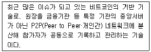
- 핀테크
- 비콘
- O2O
- 블록체인
- IDS
(정답률: 55%)
81. 소매점 입장에서 POS시스템을 도입함으로써 얻을 수 있는 효과로서 가장 옳지 않은 것은?
- 고객의 대기시간이 줄어들어 계산대의 수를 줄일 수 있다.
- 잘 팔리는 제품과 잘 팔리지 않는 제품을 찾아내어 단품관리에 유리하다.
- 전자주문시스템과 연계하여 신속한 주문이 가능하다.
- 판매원 교육과 훈련 시간 및 입력 오류가 줄어든다.
- 생산계획을 보다 효과적으로 세울 수 있어 제품 다양화가 가능하다.
(정답률: 46%)
82. 바코드와 관련된 설명으로 가장 옳지 않은 것은?
- 국내에서 사용되는 표준형 KAN코드는 13자리로 바와 스페이스로 구성되어 있다.
- 국가식별, 상품품목, 제조업체, 체크디지트 순서로 구성되어 있다.
- 효과적인 사용을 위해서는 코드번호에 따른 상품정보 등을 미리 등록해 둔다.
- 주로 제조업자나 중간상에 의해 부착된다.
- 생산시점에 바코드를 인쇄하는 것을 소스마킹이라고 한다.
(정답률: 36%)
83. 디지털 경제 성장 과정에서 나타나는 주요 변화로 가장 옳지 않은 것은?
- 인터넷을 통한 정보전달 속도 증대
- 고객에 대한 서비스의 효율성 증대
- 인터넷을 통한 콘텐츠 전송 증대
- 인터넷을 통한 물리적 제품의 소매 거래 감소
- 영업 및 마케팅 비용 감소
(정답률: 63%)
84. 지식을 크게 암묵지와 형식지로 구분할 경우 이에 대한 설명으로 가장 옳지 않은 것은?
- 철학자 폴라니가 우리는 우리가 말할 수 있는 것 이상의 것을 알 수 있다라고 한 말은 암묵지와 더 관련이 깊다.
- 암묵지는 언어나 구조화된 체계를 가지고 존재한다.
- 제품 사양, 문서, 데이터베이스, 매뉴얼, 화학식 등의 공식, 컴퓨터 프로그램 등의 형태로 표현되는 것은 형식지로 분류된다.
- 암묵지는 개인, 집단, 조직의 각 차원에서 개인적 경험이나 이미지, 혹은 숙련된 기능, 조직 문화, 풍토 등의 형태로 나타난다.
- 형식지는 서술하기 쉽고 객관적, 논리적인 디지털 지식 등이 포함된다.
(정답률: 67%)
85. 인스토어 마킹(instore marking)에 대한 설명으로 가장 옳은 것은?
- 제품의 생산 및 포장단계에서 마킹된다.
- 각각의 소매업체에서 나름의 기준으로 자유롭게 설정한 별도의 표준 코드체계에 의해 표시된다.
- 가공식품, 잡화 등 일반적으로 공장에서 제조되는 제품에 붙여진다.
- 전세계적으로 공통으로 사용 가능하다.
- 제조업체에서 포장지에 직접 인쇄하기 때문에 인쇄에 따른 추가비용이 거의 없다.
(정답률: 52%)
86. 유통 분야의 RFID 도입효과로 가장 옳지 않은 것은?
- 검수 정확도가 향상된다.
- 효과적인 재고관리가 가능하다.
- 입·출고 리드타임이 늘어난다.
- 도난 등 상품 손실비용이 절감된다.
- 반품 및 불량품을 추적하고 조회할 수 있다.
(정답률: 70%)
87. 기업에서 지식경영을 활성화하기 위해 학습조직을 구축할 때 구비조건으로 가장 옳지 않은 것은?
- 학습 결과에 대한 측정이 가능해야 한다.
- 자신의 업무와 지식관리는 별도로 수행되어야 한다.
- 아이디어 교환을 자극할 수 있도록 조직 내의 장벽을 없애야 한다.
- 학습 목표를 명확히 하고 학습포럼 등의 프로그램이 활성화되도록 지원해야 한다.
- 자율적인 환경을 만들어 창의력을 개발하고 학습에 도움이 되는 환경을 조성해야 한다.
(정답률: 69%)
88. 데이터마이닝의 분석기법 중 아래의 글상자가 설명하고 있는 기법은?
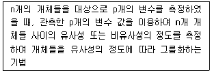
- OEM분석
- 교차분석
- RFM 모형
- 군집분석
- 연관성분석
(정답률: 44%)
89. 시스템이 의사결정자와 외부환경과의 인터페이스를 원활하게 수행하여 추구하는 목적을 달성하기 위해 지녀야 할 특성으로 가장 옳지 않은 것은?
- 시스템은 반드시 목적을 가지고 있어야 하며, 이를 위해 구성요소간의 상호작용이 원활하게 이루어져야 한다.
- 시스템은 시스템의 조건이나 상황의 변화에 대해 시기 적절하게 대응·처리할 수 있도록 설정되어야 한다.
- 시스템은 정해진 궤도나 규정으로부터 이탈되는 사태의 발생을 사전에 감지하여 수정해 나갈 수 있어야 한다.
- 시스템은 하나 이상의 하위시스템으로 구성되고 이들 시스템 간의 상호작용을 통해 목적을 달성할 수 있어야 한다.
- 시스템은 시스템을 구성하는 개별개체가 얻은 결과의 합이 전체로 통합된 개체로서 얻은 결과를 초과하여야 한다.
(정답률: 65%)
90. CAO(Computer Assistant Ordering)를 성공적으로 운영하기 위해서 필요한 조건으로 가장 옳지 않은 것은?
- 유통업체와 제조업체가 규격화된 표준문서를 사용하여야 한다.
- 유통업체와 제조업체 간 데이터베이스가 다를 때도 EDI와 같은 통합 소프트웨어를 통한 데이터베이스의 변환은 요구되지 않는다.
- 유통업체와 제조업체 간 컴퓨터 소프트웨어나 하드웨어 간 호환성이 결여될 때는 EDI문서를 표준화해야 한다.
- 제조업체는 유통업체의 구매관리, 상품 정보를 참조하여 상품 보충계획 수립을 파악하고 있어야 한다.
- 유통업체는 제품의 생산과 관련된 정보, 물류관리, 판매 및 재고관리 수준을 파악하고 있어야 한다.
(정답률: 65%)